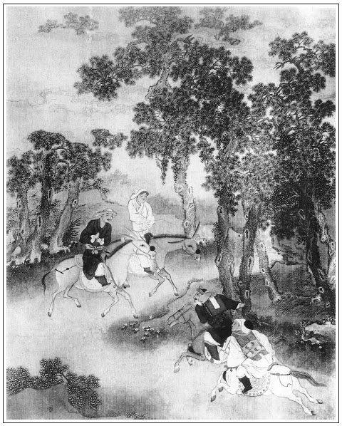

張回平插曾公一人，特為後文寧巡按對照，且見西門之惡，純是太師之惡也。夫太師之下，何止百千萬西門，而一西門之惡已如此，其一太師之惡為何如也？
寫王六兒得銀如畫，寫夏提刑得財又如畫。至寫西門得多金，而不以為意，又襯西門平素之財也。
此回上墳，寫西門傳中一大總會。看他描寫男客如許如許，又描寫堂客如許如許，又寫姬妾如許如許，特特為清明節寡婦下根種也。
內於西門祭祖文中，偏又夾寫金蓮、敬濟一段文字。忙中閒筆，已屢言矣。然未如有此段文字麗極。
看他於一本章後接寫七件事，一邪，一正，特特刺人眼中，分外令人髮指也。
來保探事，亦可為能矣。不知特為後文背主負恩一回內，「勢敗奴欺主」五字，預先下轉語。見勢未敗之先，皆是良臣，而人心之難測，有如此也！
寫西門祭祖，是正文，卻是旁文，寫弄私情是旁文，又是正文。桃者，兆也，挑也，總是隨處伏一挑剔至花園之調，方不突然也。
詞曰：
碧桃花下，紫簫吹罷。驀然一點心驚，卻把那人牽掛，向東風淚灑。東風淚灑，不覺暗沾羅帕，恨如天大。那冤家既是無情去，回頭看怎麼！張夾妙語解頤。
──右調《桂枝香》

話說安童領著書信，辭了黃通判，逕往山東大道而來。打聽巡按御史在東昌府住紮，姓曾，雙名孝序，張夾曾者，爭也。序即天敘有典之敘，蓋作者為世所厄不能自全其孝，故抑鬱憤懣，不過欲爭此一孝之序也。乃都御史曾布之子，新中乙未科進士，極是個清廉正氣的官。張夾此書竟有一好人。這安童自思：「我若說下書的，門上人決不肯放。不如等放告牌出來，我跪門進去，連狀帶書呈上。老爹見了，必然有個決斷。」於是早把狀子寫下，揣在懷裡，在察院門首等候多時。只聽裡面打的雲板響，開了大門，曾御史坐廳。頭面牌出來，大書告親王、皇親、駙馬、勢豪之家；繡眉數語凜然，應使朝廷側目。張夾如蔡太師何。第二面牌出來，告都、布、按並軍衛有司官吏；第三面牌出來，才是百姓戶婚田土詞訟之事。這安童就隨狀牌進去，待把一應事情發放淨了，方走到丹墀上跪下。兩邊左右問是做甚麼的，這安童方才把書雙手舉得高高的呈上。只聽公座上曾御史叫：「接上來！」慌的左右吏典下來把書接上去，安放於書案上。曾公拆開觀看，端的上面寫著甚言詞？書曰：
寓都下年教生黃端肅書奉大柱史少亭曾年兄先生大人門下：
違越光儀，倏忽一載。知己難逢，勝游易散。此心耿耿，常在左右。去秋忽報瑤章，開軸啟函，捧誦之間而神遊恍惚，儼然長安對面時也。張夾離合之數，大都如此。未幾，年兄省親南旋，復聞德音，知年兄按巡齊魯，不勝欣慰。叩賀，叩賀。惟年兄忠孝大節，風霜貞操，砥礪其心，耿耿在廊廟，歷歷在士論。今茲出巡，正當摘發官邪，以正風紀之日。區區愛念，尤所不能忘者矣。竊謂年兄平日抱可為之器，當有為之年，值聖明有道之世，老翁在家康健之時，張夾必著此句可想其孝。當乘此大展才猷，以振揚法紀，勿使舞文之吏以撓其法，而奸頑之徒以逞其欺。胡乃如東平一府，而有撓大法如苗青者，抱大冤如苗天秀者乎？生不意聖明之世而有此魍魎。年兄巡歷此方，正當分理冤滯，振刷為之一清可也。去伴安童，持狀告訴，幸垂察，不宣。
仲春望後一日具
這曾御史覽書已畢，便問：「有狀沒有？」左右慌忙下來問道：「老爺問你有狀沒有。」這安童向懷中取狀遞上。曾公看了，取筆批：「仰東平府府官，從公查明，驗相屍首，連捲詳報。」喝令安童東平府伺候。這安童連忙磕頭起來，從便門放出。
這裡曾公將批詞連狀裝在封套內，鈐了關防，差人繼送東平府來。府尹胡師文見了上司批下來，慌得手腳無措，即調委陽谷縣縣丞狄斯彬張夾蓋雲抵死擯也。──本貫河南舞陽人氏，為人剛方不要錢，問事糊突，張夾不如不糊突要錢矣。人都號他做狄混。先是這狄縣丞往清河縣城西河邊過，忽見馬頭前起一陣旋風，團團不散，只隨著狄公馬走。狄縣丞道：「怪哉！」便勒住馬，令左右公人：「你隨此旋風，務要跟尋個下落。」繡眉此處甚不混。那公人真個跟定旋風而來，七八將近新河口而止，走來回覆了狄公話。狄公即拘集裡老，用鍬掘開岸上數尺，見一死屍，宛然頸上有一刀痕。命仵作檢視明白，問其前面是那裡。公人稟道：「離此不遠就是慈惠寺。」縣丞即拘寺中僧行問之，皆言：「去冬十月中，本寺因放水燈兒，見一死屍從上流而來，漂入港裡。長老慈悲，故收而埋之。不知為何而死。」張夾慈悲受累煞強如水秀才之慈悲。縣丞道：「分明是汝眾僧謀殺此人，埋於此處。想必身上有財帛，故不肯實說。」於是不由分說，先把長老一箍兩拶，一夾一百敲，餘者眾僧都是二十板，繡眉至此大混。然原情察理，不無有之，非刻意做官者不為也。俱令收入獄中。報與曾公，再行查看。各僧皆稱冤不服。曾公尋思道：「既是此僧謀死，屍必棄於河中，豈反埋於岸上？張夾此念方可決獄。又說干礙人眾，此有可疑。」因令將眾僧收監。將近兩月，不想安童來告此狀。即令委官押安童前至屍所，令其認視。安童見屍大哭道：「正是我的主人，被賊人所傷，刀痕尚在。」於是檢驗明白，回報曾公，即把眾僧放回。一面查刷卷宗，復提出陳三、翁八審問，俱執稱苗青主謀之情。曾公大怒，差人行牌，星夜往揚州提苗青去了。一面寫本參劾提刑院兩員問官受贓賣法。正是：
污吏贓官濫國刑，曾公判刷雪冤情。
雖然號令風霆肅，夢裡輸贏總未真。
話分兩頭，卻表王六兒自從得了苗青幹事的那一百兩銀子、四套衣服，與他漢子韓道國就白日不閒，一夜沒的睡，計較著要打頭面，治簪環，喚裁縫來裁衣服，從新抽銀絲䯼髻。用十六兩銀子，又買了個丫頭──名喚春香──使喚，早晚教韓道國收用不題。繡眉乞兒路撿一金，便手足無措，韓氏夫婦較猶能位置者。張夾暴發人確有如此。
一日，西門慶到韓道國家，王六兒接著。裡面喫茶畢，西門慶往後邊淨手去，看見隔壁月台，問道：「是誰家的？」王六兒道：「是隔壁樂三家月台。」西門慶吩咐王六兒：「如何教他遮住了這邊風水？你對他說，若不與我即便拆了，我教地方吩咐他。」這王六兒與韓道國說：「鄰舍家，怎好與他說的。」韓道國道：「咱不如瞞著老爹，買幾根木植來，咱這邊也搭起個月台來。上面曬醬，下邊不拘做馬坊，張夾為西門慶之馬也。做個東淨，也是好處。」老婆道：「呸！賊沒算計的。比時搭月台，不如買些磚瓦來，蓋上兩間廈子卻不好？」韓道國道：「蓋兩間廈子，不如蓋一層兩間小房罷。」張夾一連三個不如，寫得窮兒暴發徹骨皆見。於是使了三十兩銀子，又蓋兩間平房起來。西門慶差玳安兒抬了許多酒、肉、燒餅來，與他家犒賞匠人。那條街上誰人不知。張夾苗青之錢如此用。
夏提刑得了幾百兩銀子在家，把兒子夏承恩──年十八歲──干入武學肄業，做了生員。繡眉生員往往由此，可歎。每日邀結師友，習學弓馬。西門慶約會劉薛二內相、周守備、荊都監、張團練、合衛官員，出人情與他掛軸文慶賀，俱不必細說。張夾苗青之錢如此用。
西門慶因墳上新蓋了山子卷棚房屋，自從生了官哥，並做了千戶，還沒往墳上祭祖。張夾大力一總注下如建瓶水。叫陰陽徐先生看了，從新立了一座墳門，砌的明堂神路，張夾亦是暴做官。門首栽桃柳，周圍種松柏，兩邊疊成坡峰。清明日上墳，要更換錦衣牌匾，張夾倒插此數句，預為戲贈作因。宰豬羊，定桌面。三月初六日清明，張旁為後清明對照。預先發柬，請了許多人，搬運了東西、酒米、下飯、菜蔬，叫的樂工、雜耍、扮戲的。張夾一行人。小優兒是李銘、吳惠、王柱、鄭奉；張夾一行人。唱的是李桂姐、吳銀兒、韓金釧，董嬌兒。張夾一行人。官客請了張團練、喬大戶、吳大舅、吳二舅、花大舅、沈姨夫、應伯爵、謝希大、傅夥計、韓道國、雲理守、賁第傳並女婿陳敬濟等，約二十餘人。張夾男客有名者一十三人，後清明節只有大舅一人耳。堂客請了張團練娘子、張親家母、喬大戶娘子、朱台官娘子、尚舉人娘子、吳大妗子、二妗子、楊姑娘、潘姥姥、花大妗子、吳大姨、孟大姨、吳舜臣媳婦鄭三姐、崔本妻段大姐，張夾女客十四人，後清明節止大妗子一人。此處，持筆一描，總為清明節預為反襯也。並家中吳月娘、李嬌兒，孟玉樓、潘金蓮、李瓶兒、孫雪娥、西門大姐、張夾本家七人，後清明節只樓、月兩人。春梅、迎春、玉簫、蘭香、奶子如意兒抱著官哥兒，張夾五人，至清明節止有如意一人，而春梅自來永福，不在此內算帳也。裡外也有二十四五頂轎子。先是月娘對西門慶說：「孩子且不消教他往墳上去罷。一來還不曾過一周，二者劉婆子說這孩子𩕄門還未長滿，膽兒小。這一到墳上路遠，只怕諕著他。繡眉真心實愛。依著我不教他去，留下奶子和老馮在家和他做伴兒，只教他娘母子一個去罷。」西門慶不聽，便道：「此來為何？張夾點出。他娘兒兩個不到墳前與祖宗磕個頭兒去！你信那婆子老淫婦胡說，可可就是孩子囟門未長滿，教奶子用被兒裹著，在轎子裡按的孩兒牢牢的，怕怎的？」那月娘便道：「你不聽人說，隨你。」從清早晨，堂客都從家裡取齊，起身上了轎子，無辭。出南門，到五里外祖墳上，遠遠望見青松鬱鬱，翠柏森森，新蓋的墳門，兩邊坡峰上去，周圍石牆，張夾遙望中景象。當中甬道，明堂、神台、香爐、燭台都是白玉石鑿的。墳門上新安的牌匾，大書「錦衣武略將軍西門氏先塋」。墳內正面土山環抱，林樹交枝。張夾寫來便活是一墳塋，又確是新發之家，故妙。西門慶穿大紅冠帶，擺設豬羊祭品桌席祭奠。官客祭畢，堂客才祭。響器鑼鼓，一齊打起來。那官哥兒諕的在奶子懷裡磕伏著，只倒嚥氣，不敢動一動兒。張夾又一驚。月娘便叫：「李大姐，你還不教奶子抱了孩子往後邊去哩，你看諕的那腔兒！繡眉處處寫出月娘根心生色，一片菩薩熱念。我說且不教孩兒來罷，恁強的貨，只管教抱了他來。你看諕的那孩兒這模樣！」李瓶兒連忙下來，吩咐玳安：「且叫把鑼鼓住了。」連忙攛掇掩著孩兒耳朵，快抱了後邊去了。須臾，祭畢，徐先生念了祭文，燒了紙。西門慶邀請官客在前客位。月娘邀請堂客在後邊卷棚內，由花園進去，兩邊松牆竹徑，周圍花草，一望無際。正是：
桃紅柳綠鶯梭織，都是東君造化成。
當下，扮戲的在卷棚內扮與堂客們瞧，張夾堂客。四個小優兒在前廳官客席前彈唱。張夾官客。四個唱的，輪番遞酒。張夾官客。春梅、玉簫、蘭香、迎春四個，都在堂客上邊張夾堂客兩路分寫，如火如錦，與後玳安廚下生火迥然不同。執壺斟酒，就立在大姐桌頭，同吃湯飯點心。吃了一回，張夾與後小玉、如意打橫列坐遙照。潘金蓮與玉樓、大姐、李桂姐、吳銀兒同往花園裡打了回鞦韆。原來卷棚後邊，西門慶收拾了一明兩暗三間房兒。裡邊鋪陳床帳，擺放桌椅、梳籠、抿鏡、妝台之類，預備堂客來上墳，在此梳妝歇息，糊的猶如雪洞般乾淨，懸掛的書畫，琴棋瀟灑。奶子如意兒看守官哥兒，正在那灑金床炕上鋪著小褥子兒睡，迎春也在旁和他頑耍。只見潘金蓮獨自從花園驀地走來，手中拈著一枝桃花兒，繡眉意致便別，韻甚，媚甚。張夾文字隨處生枝。看見迎春便道：「你原來這一日沒在上邊伺候。」迎春道：「有春梅、蘭香、玉簫在上邊哩，俺娘叫我下邊來看哥兒，就拿了兩碟下飯點心與如意兒吃。」奶子見金蓮來，就抱起官哥兒來。金蓮便戲他說道：「小油嘴兒，頭裡見打起鑼鼓來，諕的不則聲，原來這等小膽兒。」於是一面解開藕絲羅襖兒，接過孩兒抱在懷裡，與他兩個嘴對嘴親嘴兒。忽有陳敬濟掀簾子走入來，看見金蓮逗孩子頑耍，便也逗那孩子。金蓮道：「小道士兒，你也與姐夫親個嘴兒。」張夾開端。可霎作怪，那官哥兒便嘻嘻望著他笑。繡眉是天緣，走天緣。敬濟不由分說，把孩子就摟過來，一連親了幾個嘴。金蓮罵道：「怪短命，誰家親孩子，把人的鬢都抓亂了！」敬濟笑戲道：「你還說，早時我沒錯親了哩。」繡眉雖說不親錯，卻正恨不得親錯耳。金蓮聽了，恐怕奶子瞧科，便戲發訕，將手中拿的扇子倒過柄子來，向他身上打了一下，打的敬濟鯽魚般跳。罵道：「怪短命，誰和你那等調嘴調舌的！」敬濟道：「不是，你老人家摸量惜些情兒。人身上穿著恁單衣裳，就打恁一下！」金蓮道：「我平自惜甚情兒？今後惹著我，只是一味打。」繡眉「今後」二字，「惹著我」三字，隱隱開門揖盜，愛殺，愛殺。張夾「今後」，妙絕。如意兒見他頑的訕，連忙把官哥兒接過來抱著，金蓮與敬濟兩個還戲謔做一處。金蓮將那一枝桃花兒做了一個圈兒，悄悄套在敬濟帽子上。繡眉調處亦是當情，只一桃花圈出自金蓮手，便饒風韻。張夾將桃花起，即將桃花繳，一段小文字。走出去，正值孟玉樓和大姐、桂姐三個從那邊來。大姐看見，便問：「是誰幹的營生？」敬濟取下來去了，一聲兒也沒言語。堂客前戲文扮了四大折。但見：
窗外日光彈指過，席前花影座間移。
看看天色晚來，西門慶吩咐賁四，先把抬轎子的每人一碗酒、四個燒餅、一盤子熟肉，分散停當，張夾細。然後，才把堂客轎子起身。官家起馬在後，來興兒與廚役慢慢的抬食盒煞後。玳安、來安、畫童、棋童兒跟月娘眾人轎子，琴童並四名排軍跟西門慶馬。奶子如意兒獨自坐一頂小轎，懷中抱著哥兒，用被裹得緊緊的進城。月娘還不放心，又使回畫童兒來，叫他跟定著奶子轎子，恐怕進城人亂。繡眉如此留心，誰人到得。吾謂月娘去《螽斯》之化不遠。
且說月娘轎子進了城，就與喬家那邊眾堂客轎子分路，來家先下轎進去，半日西門慶、陳敬濟才到家下馬。只見平安兒迎門就稟說：張夾文字渡法。「今日掌刑夏老爹，親自下馬到廳，問了一遍去了。落後又差人問了兩遍。不知有甚勾當。」繡眉閒閒下此數語，隱出緊急情由，多少波瀾。西門慶聽了，心中猶豫。到於廳上，只見書僮兒在旁接衣服。西門慶因問：「今日你夏老爹來，留下甚麼話來？」書僮道：「他也沒說出來，只問爹往那去了：『使人請去，我有句要緊話兒說。』小的便道：『今日都往墳上燒紙去了，至晚才來。』夏老爹說：『我到午上還來。』落後又差人來問了兩遭，小的說：『還未來哩！』」西門慶心下轉道：「卻是甚麼？」正疑惑之間，只見平安來報：「夏老爹來了。」那時已有黃昏時分，只見夏提刑便衣坡巾，兩個伴當跟隨。下馬到於廳上敘禮，說道：「長官今日往寶莊去來？」西門慶道：「今日先塋祭掃，不知長官下降，失迎，恕罪，恕罪！」夏提刑道：「有一事敢來報與長官知道。」因說：「咱們往那邊客位內坐去罷。」西門慶令書僮開卷棚門，請往那裡說話，左右都令下去。夏提刑道：「今朝縣中李大人到學生那裡，如此這般，說大巡新近有參本上東京，長官與學生俱在參例。學生令人抄了個底本在此，與長官看。」西門慶聽了，大驚失色，急接過邸報來燈下觀看，端的上面寫著甚言詞？
巡按山東監察御史曾孝序一本，參劾貪肆不職武官，乞賜罷黜，以正法紀事：臣聞巡搜四方，省察風俗，乃天子巡狩之事也；彈壓官邪，振揚法紀，乃御史糾政之職也。昔《春秋》載天王巡狩，而萬邦懷保，民風協矣，王道彰矣，四民順矣，聖治明矣。臣自去年奉命巡按山東齊魯之邦，一年將滿，歷訪方面有司文武官員賢否，頗得其實。茲當差滿之期，敢不循例甄別，為我皇上陳之！除參劾有司方面官員，另具疏上請。參照山東提刑所掌刑金吾衛正千戶夏延齡，𦶑茸之材，貪鄙之行，久於物議，有玷班行。昔者典牧皇畿，大肆科擾，被屬官陰發其私。今省理山東刑獄，復著狼貪，為同僚之箝制。縱子承恩冒籍武舉，倩人代考，而士風掃地矣。信家人夏壽監索班錢，被軍騰詈而政事不可知乎！接物則奴顏婢膝，時人有丫頭之稱；問事則依違兩可，群下有木偶之誚。理刑副千戶西門慶，本系市井棍徒，夤緣升職，濫冒武功，菽麥不知，一丁不識。縱妻妾嬉遊街巷而帷薄為之不清；攜樂婦而酣飲市樓，官箴為之有玷。至於包養韓氏之婦，恣其歡淫，而行檢不修；受苗青夜賂之金，曲為掩飾，而贓跡顯著。此二臣者，皆貪鄙不職，久乖清議，一刻不可居任者也。伏望聖明垂聽，敕下該部，再加詳查。如果臣言不謬，將延齡等亟賜罷斥，則官常有賴而俾聖德永光矣。
西門慶看了一遍，諕的面面相覷，默默不言。夏提刑道：「長官，似此如何計較？」西門慶道：「常言：兵來將擋，水來土掩。事到其間，道在人為。少不的你我打點禮物，早差人上東京央及老爺那裡去。」於是，夏提刑急急作辭，到家拿了二百兩銀子、張夾苗青之錢如此用。兩把銀壺。西門慶這裡是金鑲玉寶石鬧妝一條、三百兩銀子。張夾苗青之錢如此用。夏家差了家人夏壽，西門慶這裡是來保，將禮物打包端正，西門慶寫了一封書與翟管家，兩個早雇了頭口，星夜往東京幹事去了，不題。
且表官哥兒自從墳上來家，夜間只是驚哭，不肯吃奶。張旁明為生子加官對照，一冷。但吃下奶去就吐了。慌的李瓶兒走來告訴月娘，月娘道：「我那等說，還未到一周的孩子，且休帶他出城門去。濁漒貨他生死不依，只說：『今日墳上祭祖為甚麼來？不教他娘兒兩個走走！』只像那裡攙了分兒一般，睜著眼和我兩個叫。如今卻怎麼好？」繡眉不聽好言，宜乎有此。李瓶兒正沒法兒擺佈。況西門慶又因巡按參了，和夏提刑在前邊說話，往東京打點幹事，心上不遂，家中孩子又不好。張夾不好事亦在一塊。月娘使小廝叫劉婆子來看，又請小兒科太醫，開門闔戶，亂了一夜。劉婆子看了說：「哥兒著了些驚氣入肚，又路上撞見五道將軍。不打緊，買些紙兒退送退送就好了。」又留了兩服硃砂丸藥兒，用薄荷燈心湯送下去，那孩兒方才寧貼睡了一覺，不驚哭吐奶了。只是身上熱還未退，李瓶兒連忙拿出一兩銀子，教劉婆子備紙去。後又帶了他老公，張夾理星一向不會。還和一個師婆來，在卷棚內與哥兒燒紙跳神。那西門慶早五更打發來保、夏壽起身，就亂著和夏提刑往東平府胡知府那裡打聽提苗青消息去了。吳月娘聽見劉婆說孩子路上著了驚氣，甚是抱怨如意兒，繡眉病根還在金蓮調戲，筆意隱然卻不說出，妙手。說他：「不用心看孩兒，想必路上轎子裡諕了他了。不然，怎的就不好起來？」張夾自是贈桃時驚諕了也。如意兒道：「我在轎子裡，將被兒包得緊緊的，又沒踮著他。娘叫畫童兒來跟著轎子，他還好好的，我按著他睡。只進城七八到家門首，我只覺他打了個冷戰，張旁與西門死黑影一映。到家就不吃奶，哭起來了。」繡眉因劉婆數語，奶子便得藉口，自是恆情。
按下這裡家中燒紙，與孩子下神。且說來保、夏壽一路攢行，只六日就趕到東京城內。到太師府內見了翟管家，將兩家禮物交割明白。翟謙看了西門慶書信，說道：「曾御史參本還未到哩，繡眉本尚未行，而打點先到，的真神手！你且住兩日。如今老爺新近條陳了七件事，旨意還未曾下來。待行下這個本去，曾御史本到，等我對老爺說，交老爺閣中只批與他『該部知道』。我這裡差人再拿帖兒吩咐兵部余尚書，把他的本只不覆上來。交你老爹只顧放心，管情一些事兒沒有。」於是把二人管待了酒飯，還歸到客店安歇，等聽消息。
一日蔡太師條陳本，聖旨准下來了。來保央府中門吏暗暗抄了個邸報，張夾所謂治世能臣。帶回家與西門慶瞧，不在話下。一日等的翟管家寫了回書，與了五兩盤纏，與夏壽取路回山東清河縣。來到家中，西門慶正在家耽心不下，那夏提刑一日一遍來問信。聽見來保二人到了，叫至後邊問他端的。來保對西門慶悉把上項事情訴說一遍，道：「翟爹看了爹的書，便說：『此事不打緊，教你爹放心。見今巡按也滿了，另點新巡按下來了。況他的參本還未到，等他本上時，等我對老爺說了，隨他本上參的怎麼重，只批該部知道，老爺這裡再拿帖兒吩咐兵部余尚書，只把他的本立了案不覆上去，隨他有撥天關本事也無妨。』」西門慶聽了，方才心中放下。因問：「他的本怎還不到？」來保道：「俺們一去時，晝夜馬上行去，只五日就趕到京中，可知在他頭裡。俺每回來，見路上一簇響鈴驛馬，背著黃色袱，插著兩根雉尾、兩面牙旗，怕不就是巡按衙門進送實封才到了。」張夾曾公未免疏略，且又遲緩，然正是文字頓挫折挽回地步。西門慶道：「得他的本上的遲，事情就停當了。我只怕去遲了。」來保道：「爹放心，管情沒事。小的不但幹了這件事，又打聽得兩樁好事來，張夾用筆真有龍跳虎脫之勢，看來總不由人。報爹知道。」西門慶問道：「端的何事？」來保道：「太師老爺新近條陳了七件事，旨意已是准行。如今老爺親家戶部侍郎韓爺題准事例：在陝西等三邊開引種鹽，各府州郡縣設立義倉，官糶糧米。令民間上上之戶赴倉上米，討倉鈔，派給鹽引支鹽。舊倉鈔七分，新倉鈔三分。咱舊時和喬親家爹，高陽關上納的那三萬糧倉鈔，派三萬鹽引，戶部坐派。如今蔡狀元又點了兩淮巡鹽，不日離京，倒有好些利息。」繡眉既繞巨萬，復悉錙銖，來保亦可兒也。西門慶聽言問道：「真個有此事？」來保道：「爹不信，小的抄了個邸報在此。」向書篋中取出來與西門慶觀看。因見上面許多字樣，張夾「字樣」二字妙絕，是不識字人眼中物也。前邊叫了陳敬濟來念與他聽。陳敬濟念到中間，只要結住了，還有幾個眼生字不認的。張夾又映敬濟。旋叫了書僮兒來念。那書僮倒還是門子出身，蕩蕩如流水不差，直念到底。端的上面奏著那七件事？
崇政殿大學士吏部尚書魯國公蔡京一本，為陳愚見，竭愚衷，收人才，臻實效，足財用，便民情，以隆聖治事：繡眉此疏條理井然，使實心行之，當亦有利，孰得以其人而忽其言乎。
第一曰罷科舉，取士悉由學校升貢。竊謂教化凌夷，風俗頹敗，皆由取士不得真才，而教化無以仰賴。《書》曰：「天生斯民，作之君，作之師。」漢舉孝廉，唐興學校，我國家始制考貢之法，各執偏陋，以致此輩無真才，而民之司牧何以賴焉？今皇上寤寐求才，宵旰圖治。治在於養賢，養賢莫如學校。今後取士，悉遵古由學校升貢。其州縣發解禮闈，一切罷之。每歲考試上捨則差知貢舉，亦如禮闈之式。仍立八行取士之科。八行者，謂孝、友、睦、姻、任、恤、忠、和也。士有此者，即免試，率相補太學上捨。
二曰罷講議財利司。竊惟國初定制，都堂置講議財利司。蓋謂人君節浮費，惜民財也。今陛下即位以來，不寶遠物，不勞逸民，躬行節儉以自奉。蓋天下亦無不可返之俗，亦無不可節之財。惟當事者以俗化為心，以禁令為信，不忽其初，不弛其後，治隆俗美，豐亨豫大，又何講議之為哉？
悉罷。
三曰更鹽鈔法。竊惟鹽鈔，乃國家之課以供邊備者也。今合無遵復祖宗之制鹽法者。詔雲中、陝西、山西三邊，上納糧草，關領舊鹽鈔，易東南淮浙新鹽鈔。每鈔折派三分，舊鈔搭派七分。今商人照所派產鹽之地下場支鹽。亦如茶法，赴官秤驗，納息請批引，限日行鹽之處販賣。如遇過限，並行拘收；別買新引增販者，俱屬私鹽。如此則國課日增，而邊儲不乏矣。
四曰制錢法。竊謂錢貨，乃國家之血脈，貴乎流通而不可淹滯。如有厄阻淹滯不行者，則小民何以變通，而國課何以仰賴矣？自晉末鵝眼錢之後，至國初瑣屑不堪，甚至雜以鉛鐵夾錫。邊人販於虜，因而鑄兵器，為害不小，合無一切通行禁之也。以陛下新鑄大錢崇寧、大觀通寶，一以當十，庶小民通行，物價不致於踴貴矣。
五曰行結糶俵糴之法。竊惟官糴之法，乃賑恤之義也。近年水旱相仍，民間就食，上始下賑恤之詔。近有戶部侍郎韓侶題覆欽依：將境內所屬州縣各立社會，行結糶俵糴之法。保之於黨，黨之於裡，裡之於鄉，倡之結也。每鄉編為三戶，按上上、中中、下下。上戶者納糧，中戶者減半，下戶者退派糧數關支，謂之俵糶。如此則斂散便民之法得以施行，而皇上可廣不費之仁矣。惟責守令核切舉行，其關係蓋匪細矣。
六曰詔天下州郡納免夫錢。竊惟我國初寇亂未定，悉令天下軍徭丁壯集於京師，以供運饋，以壯國勢。今承平日久，民各安業，合頒詔行天下州郡，每歲上納免夫錢，每名折錢三十貫，解赴京師，以資邊餉之用。庶兩得其便，而民力少蘇矣。
七曰置提舉御前人船所。竊惟陛下自即位以來，無聲色犬馬之奉。所尚花石，皆山林間物，乃人之所棄者。但有司奉行之過因而致擾，有傷聖治。陛下節其浮濫，仍請作御前提舉人船所。凡有用悉出內帑，差官取之，庶無擾於州郡。伏乞聖裁。繡眉數語微露佞吻，入下俱見憂民之忠
奉旨曰：「卿言深切時艱，朕心嘉悅，足見忠猷，都依擬行。」該部知道。
西門慶聽了，又看了翟管家書信，已知禮物交得明白。蔡狀元見朝，又點了兩淮巡鹽，不日往此經過，心中不勝歡喜。一面打發夏壽回家：「報與你老爹知道。」一面賞了來保五兩銀子、兩瓶酒、一方肉，回房歇息，不在話下。
正是：
樹大招風風損樹，人為名高名喪身。
有詩為證：
得失榮枯命裡該，皆因年月日時栽。
胸中有志終須至，囊內無財莫論才。
文回文禹門云：此回上墳，為西門氏一件正經大事。西門慶必要官哥同去，其言曰：「此來為何」？此言原無可厚非。兒孫之存亡夭壽，全在祖父之陰騭德行，積累深淺，不在天時寒暖炎涼，地方南北東西也。或謂：此番官哥不去，或不至死。予謂：縱然官哥不去，又焉得活？其中自有道理也。
試觀外而親戚朋友，內而妻妾奴婢，又夾雜四優四娼，大鑼大鼓，大酒大肉，寫得如火如花，極其熱鬧，可謂盛矣。乃如此大排場，不聞有起敬起孝，足以動人觀瞻者，輕輕以潘金蓮，陳敬濟調情作結，讀之不覺失笑。作者之意，亦以上辱西門慶之祖宗，下殺西門慶之子孫，即潘金蓮一淫婦也。若西門慶本在可殺之列，故一到家，延齡久候，王六兒之案先破矣。
此回兩段正文，中間央著上墳一事。正所謂雨將至，燥熱異常，戲將完而鑼鼓大作也。迨來保六兒到京，探得七事回報，功名幸獲無恙，豈西門慶，雖曾孝序亦無之何耶？《易》曰：履霜堅冰至。官哥於此回已露死機，西門慶即以下回埋伏死兆。正所謂月滿則虧，日盈則昃，陰陽消長，其即在此兩回乎？